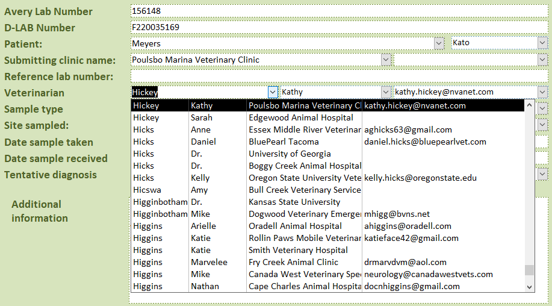
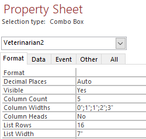

Introduction
Combo boxes are a convenient way for users to link a record from one table to another table without having to directly choose the key. These boxes run a query under the hood to display the dropdown rows.
For example:
Veterinarian combobox:
Uses the following query as the Row Source:
SELECT Veterinarians.[Vet Number], Veterinarians.[Last Name], Veterinarians.[First Name], Clinics.[Clinic name], Veterinarians.[Email address]
FROM Clinics INNER JOIN Veterinarians ON Clinics.ID = Veterinarians.[Clinic name]
ORDER BY Veterinarians.[Last Name], Veterinarians.[First Name];
These columns are then formatted so that the first column (Vet Number) is hidden and only the last 4 columns are visible.
Problem:
The combo box has limitations set by the designers of MS Access. Each combo box is only allocated so much memory, and can consequently only display the first ~64k records of that query. If the query contains >64k records, the combo box does not display the latter records.
Solution:
We can avoid the 64k problem by narrowing our query such that less than 64k records are displayed. One possible solution is to dynamically adjust the query using a WHERE clause based on the text typed into the combo box.
setSource_patient64k(thisControl As Control)
Modules/General/setSource_patient64k
This function accepts a control (i.e. the problematic combo box) and dynamically sets the RowSource query. The first letter of the text typed into the combo box is concatenated into the WHERE clause of the query. To prevent unnecessary querying (which decreases performance), the RowSource is only re-queried when the first letter changes.
' Deal with 64k problem for patients
Function setSource_patient64k(thisControl As Control)
Dim currentRowSource As String
Dim strRowSource As String
Dim firstLetter As String
'Get first letter from field
firstLetter = Left(thisControl.Text, 1)
' Create query
strRowSource = "SELECT Patients.[Lab number], Patients.[Owner's last name], Patients.[Patient name], Patients.[Clinic number of paitent] FROM Patients WHERE Patients.[Owner's last name] Like '" & _
firstLetter & "*' ORDER BY Patients.[Owner's last name], Patients.[Patient name] ASC"
'Get current rowsource
currentRowSource = thisControl.RowSource
' Requery the field when the user types something
' Only requery if field not empty and if query is not the same. Otherwise constant requerying is too slow.
If (firstLetter = "") Then
' Do nothing, field is blank
ElseIf (currentRowSource <> strRowSource) Then
'Set the rowsource to the new query
thisControl.RowSource = strRowSource
'Open the dropdown
thisControl.Dropdown
End If
End Function
This method is called by setting the "On Change" event to setSource_patient64k():
Example:
Private Sub FieldName_Change()
Call setSource_patient64k(Me![FIELD_NAME])
End Sub
Where [FIELD_NAME] is the name of the combobox.
Effectively, the query becomes:
' {firstLetter} represents the first letter of the text typed into the combo box.
SELECT Patients.[Lab number], Patients.[Owner's last name], Patients.[Patient name], Patients.[Clinic number of paitent]
FROM Patients
WHERE Patients.[Owner's last name] Like {firstLetter} *
ORDER BY Patients.[Owner's last name], Patients.[Patient name] ASC